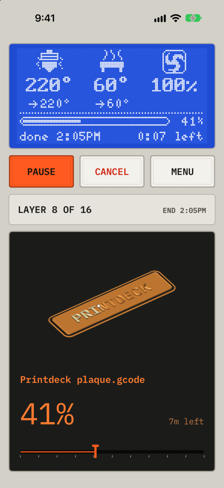
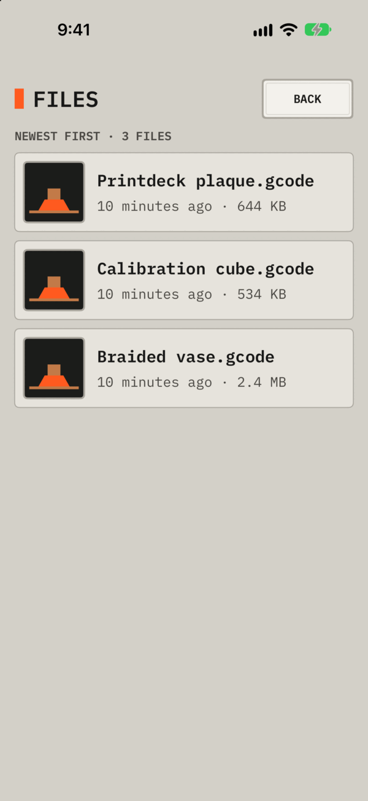
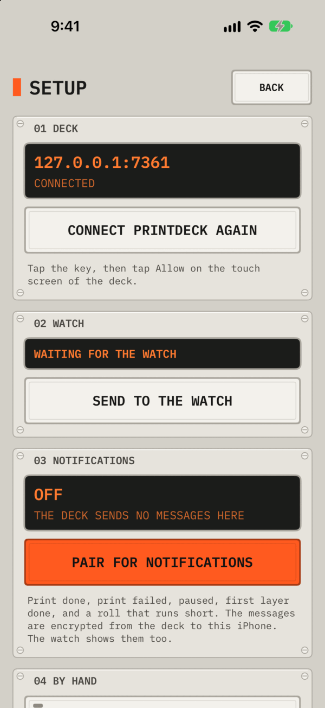
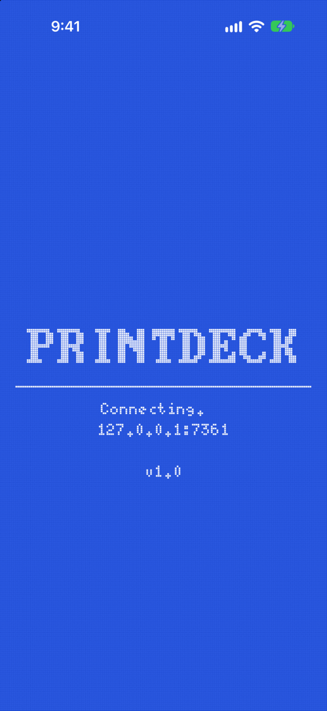
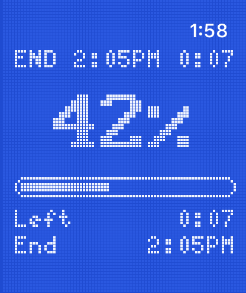
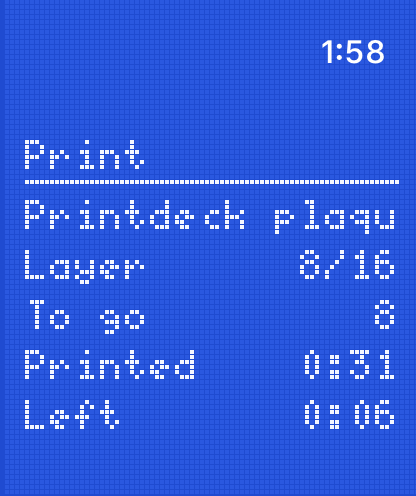
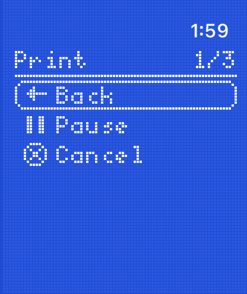
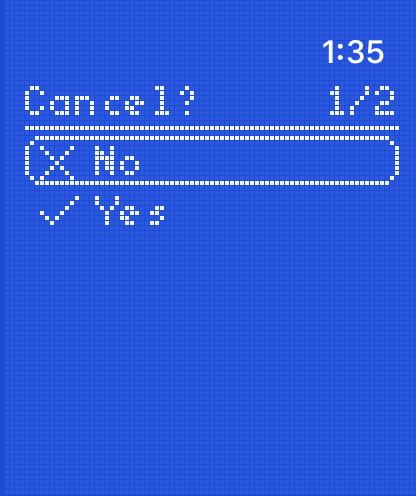

Software
The iPhone and Apple Watch apps
The deck on the iPhone and the watch: the apps, the complications, the widgets, the Live Activity and the push messages.
An iPhone app and a watch app for the Printdeck. They use the API of the deck on the local network.
- iPhone app: the deck screen in its tall layout. It shows the print, the roll, the model and the camera. It has Pause, Resume and Cancel, and Print a file. Tap the camera for a full screen view. With two cameras, tap a camera name at the top of that view, or swipe, to switch. The app keeps the choice for each deck, and the watch shows the same camera. Time lapse lists the videos of the deck. The app converts a video to H.264 on the iPhone, plays it, and has Share and Save to Photos.
- Watch app: the print on a blue dot-matrix display. Turn the Digital Crown for the camera, the model, the layer times and the filament. Tap for Pause, Resume or Cancel.
- Complications and widgets: the progress and the time left, on the watch face, the Home Screen and the Lock Screen.
- Live Activity: the print on the Lock Screen and in the Dynamic Island.
- Push messages: print done, print failed, paused, first layer done, and a short roll.
The apps read the deck every 5 seconds while they are open.








Install
Install the apps from Xcode. The deployment targets are iOS 17 and watchOS 11.
- Set
DEVELOPMENT_TEAMinproject.ymlto your team ID. Runxcodegenin this folder. - For a bundle prefix other than
org.beetlebug.printdeck, changeBUNDLE_PREFIXinproject.ymland runxcodegen. - Open
Printdeck.xcodeproj. Choose thePrintdeckscheme and your iPhone, and run. - For the watch, choose the
PrintdeckWatchscheme and the watch, and run. Turn on Developer Mode on the watch. The watch and the Mac must be on the same network. - Open Printdeck on the iPhone. Tap Connect, then tap Allow on the touch screen of the deck.
- To add the complication, edit the watch face and choose Printdeck.
If Xcode fails to find the watch, turn off Bluetooth on the iPhone for a minute.
If the deck is missing from the list, open Menu > By hand. Type the address, and tap Ask the deck for a key. Or type the key from http://printdeck.local/system and tap Save.
Push messages
- On the iPhone, open Menu > Notifications, and tap Pair for notifications.
- Allow the notifications.
- The deck sends "This phone gets the messages of your prints."
Unpair removes the phone. Settings > Phones on the deck has the same list. Each message is encrypted for the paired phone. The relay and Apple see only the encrypted message (cloud/relay/README.md).
How the pairing works:
- The app posts its device token to the relay (
POST /register), and gets a send token. - The app makes an X25519 key pair, and pairs with the deck (
POST /api/plugin/printdeck/push/pair). Both make the message key with HKDF-SHA256 (the salt is the device token, the info isprintdeck push v1). - The notification service extension decrypts the key
eof each push (AES-256-GCM).
A build from Xcode uses the APNs sandbox. A TestFlight or App Store build uses production. PUSH_RELAY in project.yml is the URL of the relay.
Network
The deck serves plain HTTP on the local network (NSAllowsLocalNetworking). The deck announces itself with Bonjour as _octoprint._tcp. The app saves its IPv4 address, because watchOS may fail to resolve printdeck.local. The address can have a port, as 192.168.1.50:8080.
API
The App Keys flow of OctoPrint gives the app its key, with no key:
POST /plugin/appkeys/requestwith{"app": "Printdeck on iPhone"}: the deck asks to allow the app, and the reply has a token.GET /plugin/appkeys/request/<token>: 202 while the deck waits, 200 withapi_keyafter Allow, and 404 after Deny or after 2 minutes.
All other requests have the header X-Api-Key:
GET /api/job,GET /api/printer: the job and the temperatures.GET /api/plugin/printdeck: the roll, the print, the main camera (camera), all cameras (cameras) and the status screen (lcd).GET /webcam/snapshot?w=..,GET /webcam/stream?w=..&fps=..: the main camera. Addcamera=<id>for another camera, orcamera=picturefor the camera of the notifications.POST /api/job:{"command":"pause","action":"pause"},{"command":"pause","action":"resume"}and{"command":"cancel"}.GET /api/files?recursive=true, andPOST /api/files/local/<path>with{"command":"select","print":true}: the files, and a print.GET /api/plugin/printdeck/model.png?w=..&h=..&mono=1: the model of the print in 1-bit dots.POST /api/plugin/printdeck/push/pair,DELETE /api/plugin/printdeck/push/<id>: the pairing for push messages.GET /api/timelapse: the time lapse videos, with the print, the frames and the length of each underprintdeck.GET /downloads/timelapse/<name>sends a video (QuickTime, Motion JPEG), with Range requests, andGET /downloads/timelapse/<name>/stillits last frame.
Folders
Shared/: the API client (Deck.swift), the state (DeckModel.swift), the printer display (LCDScreen.swift, a port ofdeck/internal/lcd), the panel parts and the keychain store.Phone/,Watch/: the apps.Complication/,Widget/: the WidgetKit extensions.Notifications/,Push/PushCrypto.swift: the decryption of the push messages.Tests/: the tests ofPushCrypto(Product > Test with thePrintdeckscheme).icon/render.swift: draws the app icon. Runswift icon/render.swift <folder>, and copyAppIcon-phone.pngandAppIcon-watch.pnginto theAppIcon.appiconsetofPhone/andWatch/.project.yml: the XcodeGen file. After a change, runxcodegen.
Screenshots in the simulator
In a debug build, PRINTDECK_ADDRESS and PRINTDECK_KEY set the deck. PRINTDECK_SCREEN opens a screen: menu or cancel on the watch, files, setup, camera or loading on the iPhone. With xcrun simctl launch, add the prefix SIMCTL_CHILD_. The deck of printdeck app -sim reads its API key from OCTOPRINT_API_KEY.
License
The code in this folder is under the MIT License (LICENSE). The rest of the repository is under the AGPL. Shared/LCDScreen.swift is a port of deck/internal/lcd of the deck, by the same authors, under the MIT License here.
Shared/Fonts/: IBM Plex Mono, SIL Open Font License 1.1 (Shared/Fonts/OFL.txt).Shared/LCDFonts.swift: the X11 misc-fixed font 5x8 (public domain), and the glyphs of the VGA 8 x 16 font of the fntcol16 package (public domain), as the displays of Klipper have them.